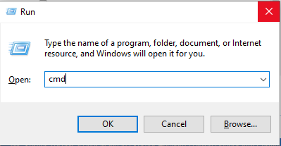
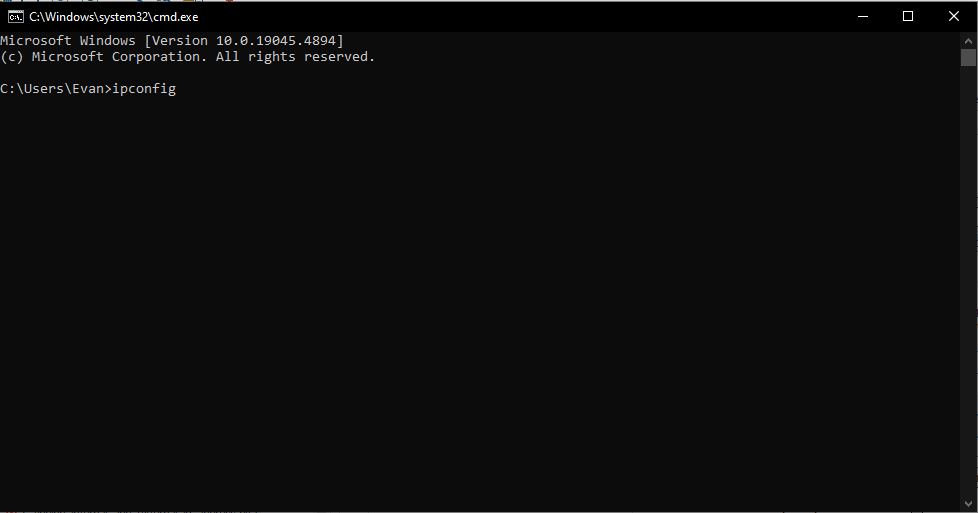
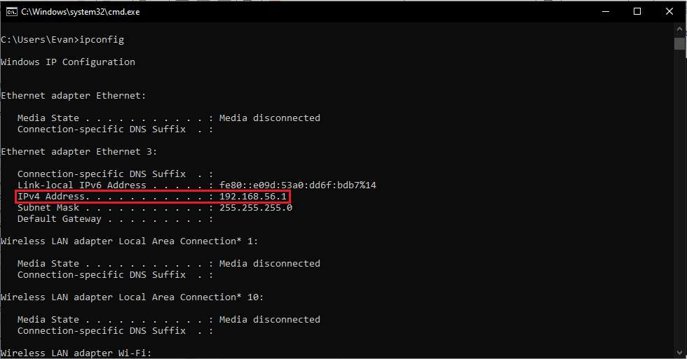
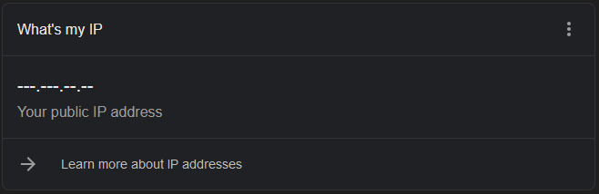

Finding your internal and external IP address
How to find your computer's internal and external IP Adress.
Computers that are connected to a network send and receive information through packets. Like a letter, each packet has a sender and recipient adress. These addresses follow the internet protocol, or IP standards.
Computers inside of a network are given a local IP from their router. A router is given it's own IP from your internet service provider in order to repesent your network to the internal. These are called internal and external IP adresses respectively.
Internal IP
For computers with the Windows Operating System, you can use the ipconfig command in the command prompt.
- Open the command prompt
Hold both the Win + R keys to open the run prompt.
- Enter cmd in the Open: Text entry box 
- Press the Enter key on your keyboard, or press the OK button on the Run prompt to continue.
- A command prompt window will open. Type ipconfig at the command line and press the Enter key on your keyboard. 
- The command prompt will populate with "Windows IP Configuration".
If your computer is connected with Ethernet directly to the network, scroll to the section beginning with Ethernet adapter Ethernet.
If your computer is connected to the network over WiFi, scroll to the section beginning with Wireless LAN adapter Wi-Fi
- Find the IPv4 Address
Your internal IP can be found on the line beginning with IPv4 Address. In the image below, this computer has the IPv4 Address: 192.168.56.1

External IP
The exernal IP can very easily be found with any web browser.
With YouGetSignal
Go to https://www.yougetsignal.com/what-is-my-ip-address/ in a web browser, and your external IP will be displayed. There is no security risk associated with accessing your external IP address
With a Google Search
Entering What's my ip into Google will provide your External/Public IP address.
